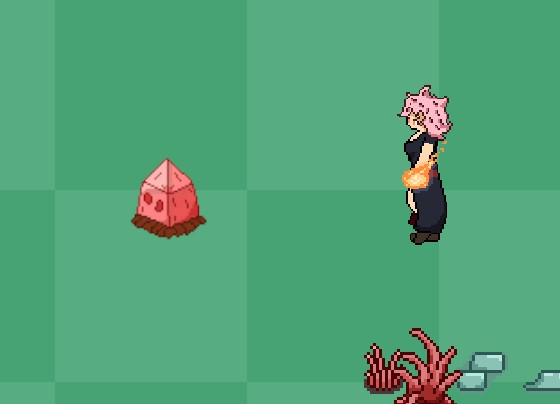

October 21, Blog 5

Our game is named Escape From Efil, it is a top down shooter game. My role in this game's development is the creation of art assets, UI, sound, and the producer role. Overall, players responded positively, generally liking the art style and camera movement. A number of the bugs that playtesters found my partner and I had already identified previously and are working to fix. One piece of advice we received was that the fireball projectile could be a bit faster which we also agreed with and may implement. Another aspect playtesting revealed was that our enemy design was a little difficult to distinguish from background elements. While this is a valid critique that we will keep in mind when polishing designs, enemy movement was not yet implemented so that may have made them more visible. We are planning to keep much of this feedback in mind while polishing off the game, especially the parts regarding how fun it is to play as the main character and enemy visibility. The overall ratings of the game were about where we expected given the progress we had made and expect that the ratings would improve given more time and love are spent on the game.